電視遊樂器與電動玩具模擬器
有了這些模擬器，一圓小時候想玩卻買不起的缺憾～
電玩模擬器推薦
這裡只列出個人選擇使用的模擬器，更完整模擬器清單，可參考 Wikipedia 的《List of video game emulators》條目。
Family Computer (Nintendo Entertainment System)
模擬器：Nestopia
俗稱「任天堂」或「紅白機」。小時候家裡只玩得起這個，玩到 PS 都出了，我還在摸紅白機～
這款模擬器比較囉嗦的是，關閉程式時會跳出詢問視窗，幸好可以從功能表的「Options」→「Preferences」→「Confirm exit」取消勾選。
如果載入的是磁碟機遊戲，需要換片時，可從功能表的「Machine」→「External」→「Disk System」→「Change Side」完成，或者按「Shift+B」。
Mega Drive (Sega Genesis) / Master System
模擬器：Gens
俗稱「SEGA」，當年小學還沒有英文課程，不過大家第一個會唸的英文就是「誰嘎」。
小學時向同學借來玩過《暴力剋星》《亞克斯傳奇》，國中時在表弟家玩過「戰斧系列」以及《格鬥四人組》《超級聯盟棒球 91》《金冠軍兄弟象世界職棒爭霸戰》，再加上口耳相傳的《光明與黑暗續戰篇》與招牌的《音速小子》，款款都是優質之作！因此，雖然我童年最哈的是「超任」，但其實以 2D 遊戲來說，MD 表現得比較成熟，遊戲玩起來質感反而比 2.1D 的超任好[1]。
Super Famicom (Super Nintendo Entertainment System)
模擬器：Snes9x
簡稱「超任」，再加裝一台「黑金剛」或「萬變蝶龍」的磁碟機，就能用每片 50 元的價格買遊戲來玩，讓一直沒錢買卡帶的我羨慕得要死，超想要一台。
我還記得第一次看到「超任」時，深深為它手把的 L 鈕和 R 鈕著迷不已，當時覺得這搖桿太酷了！如果用這樣的搖桿玩遊戲，一定會很過癮！
PlayStation
模擬器：ePSXe
想玩 PS 遊戲可不好搞！因為模擬器本身是空的，你除了必須有合法授權的 BIOS 韌體檔才能啟動，還要四處合用的影音處理套件（Plugins）來調校聲光效果，所以要多花點時間上網蒐集資源，然後要耐心研究～
PlayStation 2
模擬器：PCSX2
模擬器本身是空的，要有合法授權的 BIOS 韌體檔才能啟動，但內建 Video 和 Audio 等 Plugins～
用 PCSX2 1.4.0 玩 NBA 2K 系列的話，會有越玩越慢的情形，但 1.2.1 卻沒這問題。
即時存檔
即時存檔熱鍵是 F1，即時讀檔是 F3。
F2 是切換到下一個存檔，上一個的話是 Shift + F2。
遊戲進行速度
按 Tab 可以加快遊戲的進行速度，預設是兩倍，可在「設定→模擬器選項→GS→渦輪加速」調整。
PlayStation Portable
模擬器：PPSSPP
PSP 的遊戲模擬起來，其實比 PlayStation 2 流暢、好看！獨佔的經典遊戲很多，其它好玩的遊戲也不少，很值得蒐藏！
通常我優先玩表現良好的 PSP 遊戲，而不是模擬起來不順暢的 PS2。
Nintendo 64
模擬器：Project64
每次執行，都會跳出 Project64 needs your help 視窗，要求購買 Enter notification code。可在模擬器的 Config 資料夾裡，編輯 Project64.cfg 檔案，將 Run Count 改為 -1，就不會再看到它了。
Game Boy / Game Boy Color / Game Boy Advance
模擬器：VBA-M
出 GBA 時，我已經有電腦可以玩遊戲，所以我對往後的掌機沒有留下任何回憶，只知道它有實況野球君系列，以及換湯不換藥的神奇寶貝各色版。
另外，這款模擬器也可以跑 GB 和 GBC 的遊戲。
我對 GB 的第一印象，是國中時同學借我帶回家玩《幽遊白書３魔界之扉》，這結合 ACT 操控和 RPG 養成的遊戲，超好玩到從此也哈一台 Gameboy！長大後還真的買了一台空機，彌補過去只能看著大買家 DM 圖片，幻想哪天能買下來的缺憾～
Nintendo DS
模擬器：DeSmuME
DS 是 Dual Screen 的意思。唯一有興趣的遊戲，是可用四人戰鬥的《勇者鬥惡龍５》，因為原本在 SFC 只能三人參戰，打得很艱辛，很想好好重振旗鼓再戰一次。
Arcade game
模擬器：MAME
俗稱「電動」「大型電玩」。當年沒甚麼零用錢的我，沒本錢花「補習費」，所以我小時候不曾玩過《快打旋風２》，都是看別人玩，頂多和弟弟玩了兩三次《吞食天地２》，大概投個 15 元玩兩三局，再配一罐汽水。
這模擬器並不是用「開啟檔案」的方式執行遊戲！請把下載的遊戲放在 MAME 的 roms 資料夾裡面，且不要解壓、也不要改檔名，這樣才偵測得到遊戲，然後從偵測到的遊戲清單中挑一款來玩。
MAME 0.170 和更早版本的遊戲清單，最多顯示 15 款遊戲，亂數決定（所以清單的順序也都亂排），因此大多數想收藏更多遊戲的玩家，會下載 MAMEUI 來管理。MAME 0.171 開始，操作介面大翻新，遊戲清單內建對 ROM 分類的功能，不用再下載 UI 來管理遊戲了。但 Available 分類要到 0.176 才改成只顯示你手上的 roms，之前只能從一大串清單中將遊戲挑出來、或輸入遊戲名稱搜尋出來，一個個加入到 Favorites。但 0.176 有看不到按鈕設定介面的 BUG，不建議使用。
操作
進入遊戲後，首先會看到一個白框藍底的聲明訊息，要按 ←→ 表示同意。
用 MAME 玩遊戲要有投幣的動作，對應的按鍵是 5 6 7 8（第一人到第四人），投幣完按 1 2 3 4（第一人到第四人）表示開始。
第一人的操作方式，有手把的話會自動偵測並啟用，鍵盤的話用↑↓←→控制方向，Ctrl、Alt、Space、Shift、Z、X 為按鍵 1 到 6。第二人的操作方式，用 R F D G 表示上下左右，A S Q W 為按鍵 1 到 4。
按 Tab 鍵可進入機台設定，通常用來調整難易度，或免投幣模式，但要看遊戲本身是否提供功能，做法也不一樣。有些設定，要按 F3（Soft Reset）或 Shift+F3（Reset Game）重新啟動遊戲才會套用。若設定不當，導致無法再度進行該遊戲，可到 MAME 所在路徑的 cfg 資料夾，將該遊戲的設定檔刪除。
MAME 支援即時存檔和讀檔的功能，按 Shift+F7 和 F7。
遊戲中可按 P 暫停。
版本
MAME 版本越新，能支援的遊戲也就越多，且模擬效率也越好。但有個問題，舊版能執行的 ROM 在新版有時候不能用，這是因為 ROM 也會因為修正錯誤而有新舊版之分，而新版 MAME 會改支援新版的 ROM 並淘汰有錯誤的 ROM。幸好這只在早期發生，現在 ROM 都穩定下來，很少再有這個困擾。
總之，挑 MAME 不見得越新越好，能否相容你手上的舊 ROM 其實也很重要！當然最好是重新蒐集新版支援的 ROM，才能更正確的執行遊戲～
那要怎麼挑版本？通常是看網路上流通的 ROM 合集，有些人會去蒐集當下所有最新的 ROM，再從最新版號的 MAME 一個個去測試，看哪一個能 100% 執行，便將模擬器連同遊戲做成懶人包，以「MAME 0.166 ROMs 全集」「MAME 0.183 ROMs Full Set Collection」「MAME 0.197 Full Rom Set」「MAME 0.201 Complet ROMSET」等不同名稱放上網路。
最後，你可能會發現 0.168 最常出現，那是已停止維護的 MAME Plus! 最後一版。當時這是台灣和中國最主要的懶人包，不只將模擬器和遊戲打包，連同 UI、簡介、封面、套件、甚至新聞報導都一一整理好放進去。這精神到現在都還有人承襲下去，以 MAME Plus! 為基礎，在做自己心目中認為盡善盡美的 MAME 全集[2]～
關於調整難易度
像快打旋風 2 這類 Capcom 機台的遊戲，按 Tab 進入機台設定，選擇 Dip Switches，裡面直接就有難易度（Difficulty）可調整。
而像餓狼傳說 2 這類 Neo Geo 機台的遊戲，按 Tab 進入機台設定，選擇 Dip Switches 後，得將 Setting Mode 設為 ON，稍待一會或按 Reset 重新啟動遊戲，才會進入真正能夠設定難易度的畫面（SETTING UP THE SOFT DIP → SLOT1 FATAL FURY 2 → DIFFICULTY）。設定完還得把 Setting Mode 設回 OFF，才能進入遊戲畫面。
至於沒有 Dip Switches 的遊戲，就按 F2 進入 Service Mode 調整各項系統數據。
連射
0.171 開始，MAME 內建 Autofire 功能！
然而這是以 Cheat 的方式提供，因此必須在剛進入 MAME 時的畫面，選 Configure Options（設定選項）→ Miscellaneous Options（其它選項），將 Cheats（作弊引擎）設為 On，這樣進遊戲後按 Tab 就會看到 Cheat（作弊引擎）選項，裡面有 Autofire Settings（連射設定）這個功能！
進去後將想要連射的 Button 設為 On 即可，下面還有個 Autofire Delay（連射延遲）可以設定連射速度。
不過，若該遊戲有放金手指檔案的話，內建的這項功能不會顯示，因為被吃掉了！這時用金手指檔案的連射就好。
金手指
到 http://cheat.retrogames.com/mame_downloads.htm 下載作弊檔，然後將檔案解開，放在放在 [MAME]\cheat 裡面。
0.170 或更舊版本，必須在執行 mame64.exe 時下達 -cheat 參數（通常建立捷徑然後加進去），這樣進入遊戲後，按 Tab 才會出現 Cheat 選項，然後進去啟動想要的作弊功能。
0.171 版以後，可以直接在執行程式後，選 Configure Options（設定選項）→ Miscellaneous Options（其它選項），將 Cheats（作弊引擎）設為 On，這樣進入遊戲後按 Tab 就會出現 Cheat（作弊引擎）選項！
切換中文介面
0.171 版開始內建中文介面！執行程式後，選 Configure Options → Constomize UI，將 Language 設定為 Chinese (Traditional)，記得按 Save Configuration 保存設定。
但英文介面對選項的設定值有綠色表示 On、紅色表示 Off 的效果，中文介面一律白色。
略過 BIOS 選擇選單
0.171 版開始，每次執行遊戲可挑選各種 BIOS！覺得反而麻煩的話，可以在 Configure Options（設定選項）→ Miscellaneous Options（其它選項），將 Skip bios selection menu（略過 BIOS 選擇選單）設為 On。
我的設定
User Interface
Save State Kbd:F7 Joy:R2
Load State Kbd:Shift+F7 Joy:L2
Player Controls
P1 Button 7 Kbd:C
P1 Button 8 Kbd:V
P1 Button 9 Kbd:B
P1 Button 10 Kbd:N
Other Controls
1 Player Start Kbd:1 Joy:Start
Coin Kbd:5 Joy:Select
注意
模擬器不見得越新版就越好，有時候越新反而相容的遊戲越少。因此，建議平常以最新版的模擬器玩遊戲，但保留舊版模擬器以應付可能發生的相容性問題。
常用電玩主機圖照
圖片來自 Wikipedia，邊看邊方便設定模擬器的按鈕，嫌圖不夠大，可點圖片連到 Wikipedia 各主機的條目，裡面的圖大到 3720 像素寬～
Family Computer
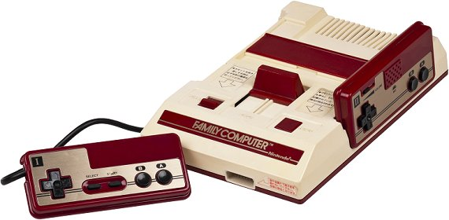
Mega Drive
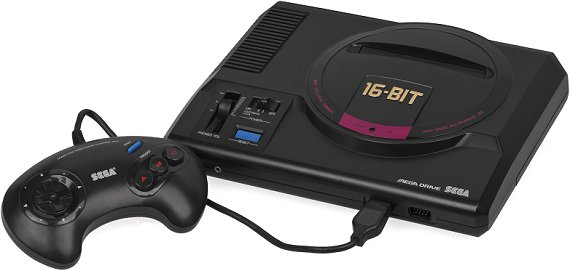
Super Famicom
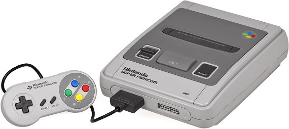
Sega Saturn
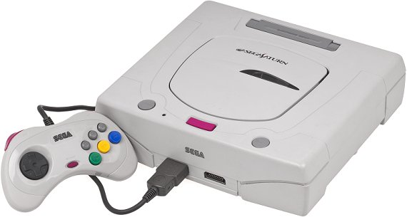
PlayStation
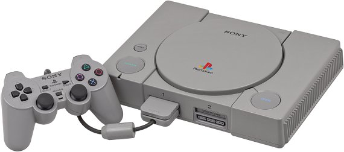
Nintendo 64
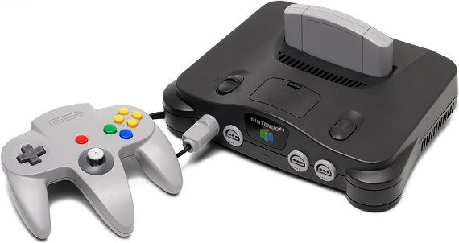
Dreamcast
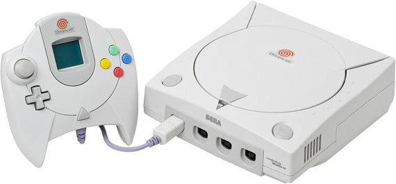
GameCube
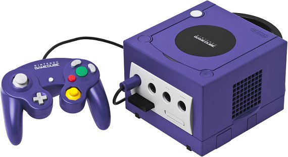
Xbox
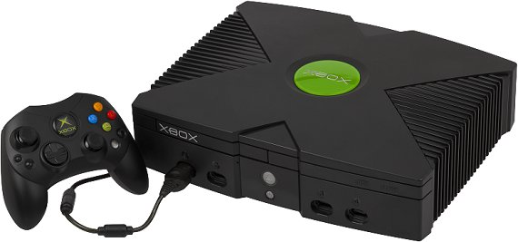
Game Boy
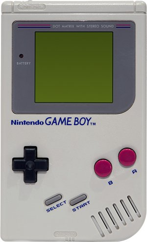
Game Boy Advance
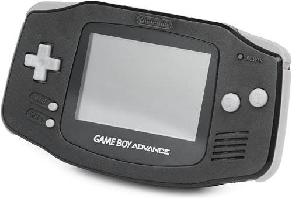
Nintendo DS
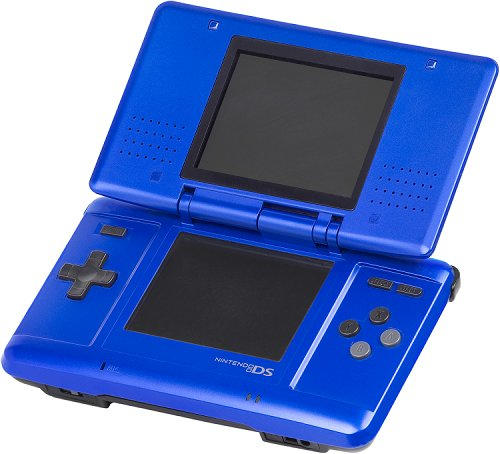
PlayStation Portable
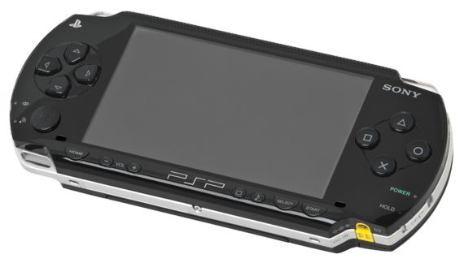
模擬器 ROM 特殊代號
引用 http://www.itboshi.com/w/20101107/246270.html 的內容如下：
[a1] 的 [a] 是 Alternate（替代版）的意思，因为有些游戏有出现 Bug，替代版是将 Bug 修正，跟 [f] 有点类似。后面的数字是因为同一个游戏可能不止一个人修正释出。依照放出时间来表示顺序。后面代号的数字也是同一样的意思，所以就不表示。
[b] Bad Dump（转档失败版）：Dump 是指用某些设备将游戏资料转换成电脑可读取的数据。因为当初放出游戏的人不见得知道自己 Dump 失败，等到有工具可以测时才发现，但已经在网络流传开了。
(PD) Public Domain（公共领域）：简单来说可以把它当成是广告或宣传某些讯息，不是什么游戏档案。
[h] Hack（破解版）：改变游戏的内容、人物或玩法。
[o] Overdump（加料版）：某些放出游戏的团队，会证明这是由它们放出的游戏，会在某些部分加入一些没有的资料。
[t] Trained（修改版）：有些游戏太难玩，所以会在开头画面添加金手指功能，如人数最大、血全满或无敌之类的选单让你好过。
[T-English] 是英文转换版：通常将日文版游戏改成别国语言，因为游戏公司没有发行该语言版本，就有好心人释译并做成档案。[T] 是转换某语言。
[p] Pirate（盗版）：算是非法拷贝，但玩起来跟正版没二样。
原版的游戏不会在后面加一堆有的没有的代号，日版游戏比较特别，在 (J) 后面会加 [*]，表示完美转档。其他 (E) 欧版、(U) 美版后面都不会加。
其他还有 [Unk] [Unl] 都是表示来路不明的游戏，还有像 GB 专用 [C] 表示是彩色版，SFC 专用的 [BS] 表示是要透过日本卫星系统才能玩的游戏。不过如果只是想玩游戏的话，只要后面有加一堆有的没有的，不要玩就好了。